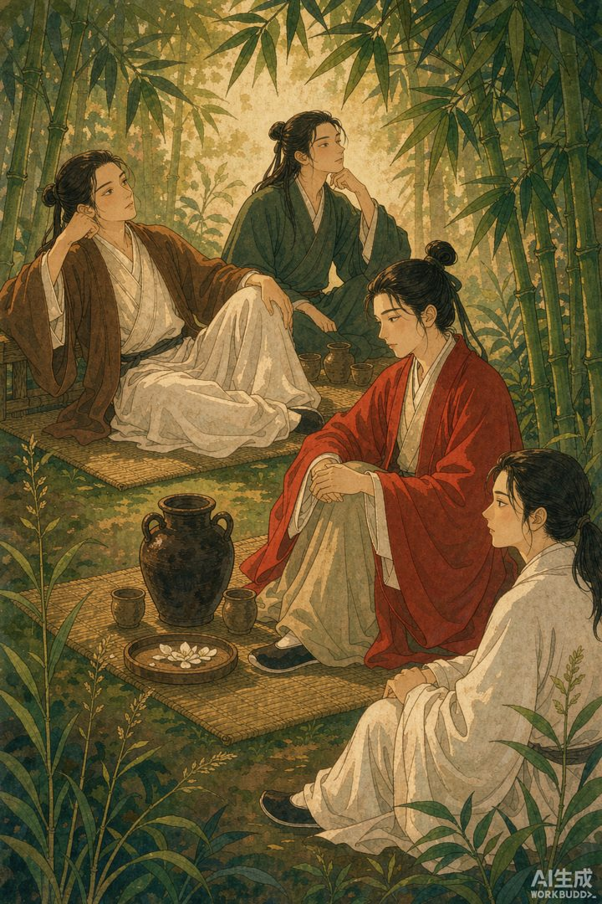
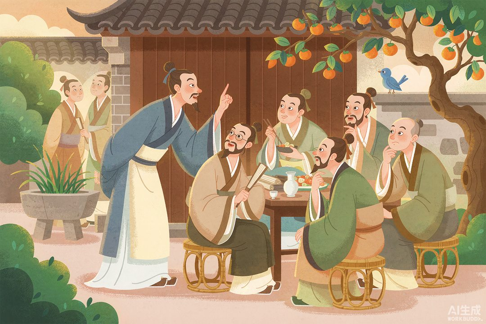
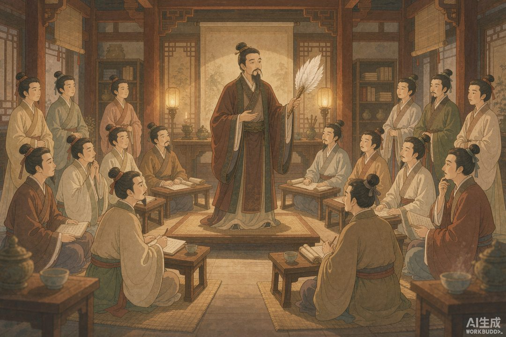

|
信息传播那些事儿 · 卷二 竹简与封泥 · 第 25 篇 |
|
魏晋清谈 —— 一群不写文章、只动嘴皮子的名士，怎样左右了一个时代 |

▲ 竹林里的名士清谈，是古代的「直播连麦」（AI 生成示意图）
|
上回说商队把消息搬过欧亚大陆；可有一群人，连货都不搬，光凭一张嘴「聊」，就搅动了半个中国的风气。他们不写檄文、不办报纸，却在竹林里、酒席上，用清谈把一代人的价值观给定了。 |
商队是「会走路的微信群」，那魏晋名士的清谈，就是古代的「播客」——还是直播连麦那种。你不发稿、不印报，就几个人往那一坐，酒一端，嘴一开，聊的全是「天道」「有无」「言意」这种虚头巴脑的大词。可偏偏是这种聊天，把一个时代的风气给带起来了。
今天咱们就聊聊：一群只动嘴皮子的人，凭什么能当「媒体」？
一 | 从「清议」到「清谈」：一字之变 |
东汉末年，太学生最爱干一件事叫「清议」：聚在一起品评人物、议论朝政。谁贤能、谁该升官、朝廷哪不对，他们当面就说——郭泰、许劭的「月旦评」就是典型。这其实是士人参与政治的一张嘴。
可「党锢之祸」一来，谈朝政是要掉脑袋的。士人吓怕了，话题悄悄拐了弯。到了曹魏正始年间（240—249），何晏、王弼带头，把「谁该当官」换成了「宇宙的本源是有还是无」。清议变清谈，一字之差，是士人从「盯着朝堂」退回「盯着天道」——换个角度看，这也是高压政治下，他们硬抠出的一块自由精神园地。

▲ 名士在庭院中辩论玄理（AI 生成示意图）
二 | 竹林七贤：古代第一档「谈话类节目」 |
正始名士被司马家一刀砍散后，另一拨人躲进了山阳的竹林。阮籍、嵇康、山涛、向秀、王戎、刘伶、阮咸——七个人，史称「竹林七贤」。
他们喝酒、弹琴、长啸、辩论，嵇康打铁、刘伶裸奔、阮籍穷啸——用今天的话说，是「行为艺术」配清谈。他们喊出「越名教而任自然」，表面放浪形骸，实则是对司马氏政权的不合作。一个时代的审美和风骨，就在这七个人的嘴皮子和酒杯里被定下了调子。
三 | 「口中雌黄」与「一世龙门」 |
到了西晋，清谈成了顶流。权贵王衍，长得帅、最会聊，手摇一把玉柄麈尾，谈玄时错了就随口改。世人笑他「口中雌黄」——「信口雌黄」这个成语，就是从他这儿来的。他的讲堂被粉丝捧为「一世龙门」，士大夫以能听他清谈为荣。
你看，这像不像今天的顶流主播？名士即网红，清谈即流量，谁掌握了「说什么、怎么谈」，谁就坐上了话语权的山顶。

▲ 名士执麈尾讲学，粉丝称为「一世龙门」（AI 生成示意图）
四 | 当清谈变成「误国」：王衍的最后一叹 |
王衍官拜司徒（宰相级），国家危难却只谋「三窟」自保。永嘉五年（311 年），洛阳陷落，他被石勒俘虏，临死哀叹：「若平时不尚浮虚、肯戮力匡扶，不至于此。」
史学家陈寅恪一句话点破：在野隐士清谈无妨，「清谈误国，正因在朝执政者崇尚虚无、口谈玄远，不屑综理世务」。空谈一旦坐上权力位，就叫「虚谈废务」——嘴上功夫，也能亡一个国家。
所以清谈证明了一件事：口耳相传的观点，照样是一种「媒体」。它不印在纸上，却塑造了一个时代的风气、审美，甚至国运。
|
数字锚点 · 清谈这台「古播客」 | |||||||
|
|
🔔 下篇预告 · 第 26 篇《唐代进奏院状》—— 名士用嘴聊，官府用纸写。中国最早的「报纸」长啥样？它居然是地方驻京办发回老家的「内参」。 |
史料转引自《世说新语》、正始玄学相关研究（中国传统文化促进会）、中央纪委国家监委网站「清谈之害」、人民网/中国网相关文史文章；配图为 AI 生成示意图。